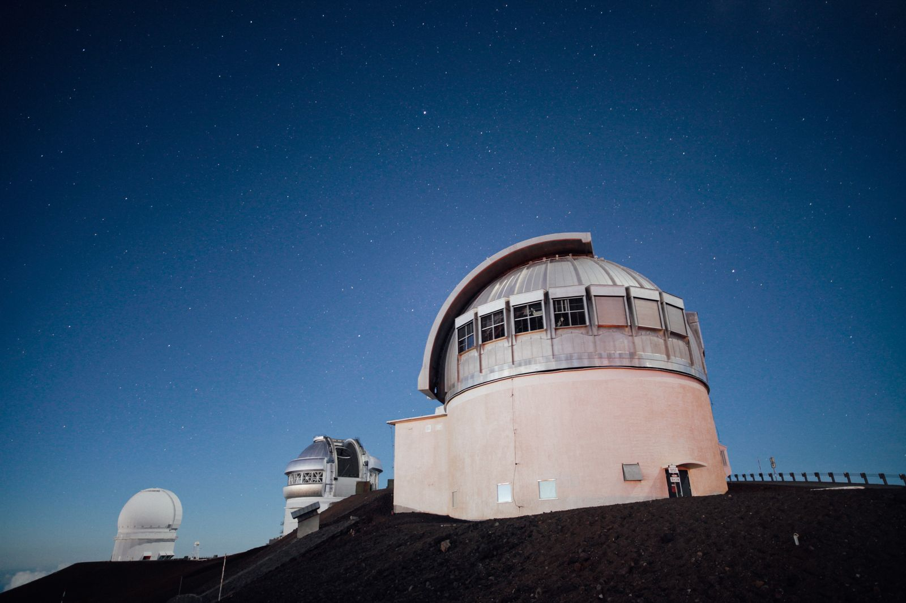

Observing log · Home entry
Distances, measured honestly.
I am an astrophysicist. Institutes, planetariums and survey teams hire me to do one thing carefully: measure how far away things are — and say how sure we are. I audit the numbers on gallery walls, build the pipelines that calibrate survey data, and teach the distance ladder to anyone who has to print a cosmic figure and stand behind it.

The Distance Ladder Explorer
Log 01 · The signature instrumentNobody measures the distance to a galaxy directly. We climb: each rung is calibrated on the one below, and each rung's uncertainty climbs with us. Pick a target. The sheet gives its distance in the unit that rung actually uses, the method, the lookback time with the arithmetic shown — and the ±, printed the same size as the number.
Targets · near to far
Andromeda Galaxy (M31)
Nearest large galaxy · the 1924 measurement · Rung 2 · Standard candles
2.5 million ly
- In the ladder's unit
- 0.77 Mpc (766,000 pc)
- Measured by
- Cepheid variables, cross-checked against the tip of the red-giant branch
- Lookback time
- 2.5 million years
- The arithmetic
- 2,500,000 ly → the light left 2.5 million years ago, long before Homo sapiens
- Uncertainty
- ± 100,000 ly (about ± 4%)
In 1924 Hubble found Cepheids in what was then called the Andromeda Nebula, and the universe grew by orders of magnitude overnight. The modern figure is 2.5 million ly ± 4% — the ± is part of the number, not a footnote to it.
The ladder, in print
Log 02 · Reference tableThe same figures the explorer uses, set as a table — because a number you cannot check is a number you should not print. Conversion used throughout: 1 pc = 3.26 ly (3.26156, before rounding).
| Target | Distance | In parsecs | Method (rung) | Uncertainty |
|---|---|---|---|---|
| The Moon | 384,400 km | 0.00257 AU | Laser ranging (0) | ± a few cm |
| Proxima Centauri | 4.246 ly | 1.302 pc | Parallax — Gaia (1) | ± 0.002 ly |
| Large Magellanic Cloud | 163,000 ly | 50.0 kpc | Cepheids + eclipsing binaries (2) | ± 2% |
| The Galactic Centre | 26,000 ly | 8.0 kpc | Stellar orbits (1–2) | ± 1,000 ly |
| Andromeda Galaxy (M31) | 2.5 million ly | 0.77 Mpc | Cepheids + TRGB (2) | ± 100,000 ly |
| A galaxy at z ≈ 1 | z = 1.0 | 3.3 Gpc comoving | Supernovae Ia + redshift (3) | ± 5%, H₀-dependent |
The Hubble tension, stated plainly
The expansion rate of the universe, H₀, is measured two independent ways — and two careful measurements disagree. The early-universe route (the cosmic microwave background, Planck satellite) and the late-universe route (this ladder: Cepheids feeding supernovae) differ by about five standard deviations. Neither side has found its mistake. Every distance beyond the local rungs inherits this argument, so this log quotes H₀ as a range and never as a point.
The register
Log 03 · EngagementsDistance audit — a planetarium's new cosmology gallery
Complete · 2025
Photometric pipeline — a wide-field survey data release
Complete · 2024–25
“One Sky, Five Distances” — a public lecture series
Complete · 2025
Figure check — a touring science-museum exhibition
In progress · 2026
Data support — a supernova cosmology working group
Ongoing · 2026
Fees, in the log
Log 04 · The price shapeConsultancy
€1,350per day · half-day minimum
Distance-scale advice, proposal review, calibration troubleshooting — for teams who need a measurer in the room, not a lecture about measuring.
Distance & figure audits
from €6,500fixed, per gallery or exhibit
Every printed figure rebuilt from primary sources and returned as a signed audit sheet — the document your insurer, funder and future self will want.
Data-analysis projects
from €18,000scoped per project
Pipelines and calibration work on survey-scale data, delivered with the uncertainty maps included — never as an afterthought.
Planetarium & media science review
from €4,800per production
Scripts, wall text and narration checked line by line. The errors I catch are cheapest before opening night.
Lectures & teaching
€1,250per talk + travel
The distance ladder taught live, with the audience computing as we climb. Series priced by the run.
What moves the price: data volume (archive pulls run to tens of terabytes), compute (HPC time is booked, not wished for), the deadline (an opening date is a hard wall; a journal deadline is a soft one), and travel to your site. What never moves it: telescope time. Facilities allocate that by peer review — it is never mine to sell. If your project needs it, I will help you write the proposal instead.
From the log's margins
Log 05 · Attached to Case 01“She found the error we would have been photographed in front of for a decade — and handed us the audit sheet that proves every other figure on the wall. That sheet is now part of the gallery's maintenance file.”
Printing a cosmic figure?
Send it before it goes on the wall. One frictionless path: the enquiry form, or the email beside it.